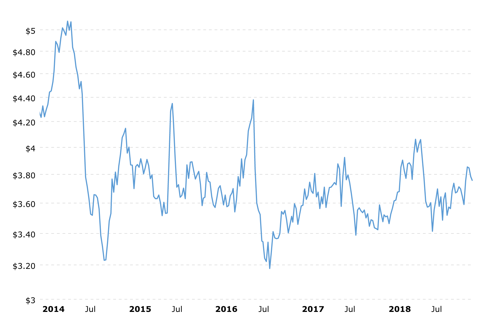

The past year there’s been an uptick in activity and discussion of AgTech, the common name given to the area of technology applied towards all things agriculture. This can range from biotech advancements for farming inputs to marketplace platforms (think leasing equipment or selling grain) to pretty-advanced robotics (think drones for surveying crops). A source of press coverage around New York as of late has been focused on vertical farming, featuring upstarts like Bowery Farming and the Softbank-backed Plenty.
With all the chatter, I realized how little I know about farming or agriculture, despite coming from eastern NC - an area that’s been tied to agriculture since God knows when. Luckily, we have a close family friend who’s part of a family-owned farm that dates back to the mid 19th century. He was kind enough to let me come over to the farm over the holidays and fire away with a bunch of questions. Below is a brief summary of the key themes that came up during our discussion.
Demise of small farms

One of the first areas that we touched on is the consolidation of farming across the U.S. Today, his family’s operation covers roughly 3,000 acres of farm land. A few decades ago that would been on the large end of the spectrum, but today that falls in the “small- to medium-sized” end. I asked why that is and there were a few interesting patterns that he touched on in response.
First, farming is hard work. You can’t farm remotely - at least right now. Your product is in the ground and needs to be cared for in ways that a SaaS product does not. You have to survey the crops and the fields. You have to train and monitor farm hands. If you have livestock (which they do not, instead focusing on corn, soybeans, tobacco, cotton and wheat), this is even more the case. There’s no such thing as a farm being on auto-pilot.
Second, the economics of farming have become less attractive over the past decades due to a number of factors touched on later in this post - among them are overseas competition, increasingly volatile commodities markets, and increasing cost of inputs.
These two factors are typically the crux of why small farms close up shop. Such farms are often family-owned and operated. When the work required for operating a farm is significantly harder and less glamorous than other career opportunities and the economics of operating a small farm have become more dire and risky, future generations decide to look elsewhere for their livelihood. This means the current generation has to find new owners. These new owners are those that have the means - monetary and human - to operate and expand, leading to consolidation. The economies of scale and ability to diversify that come with operating a large farm lead to economics that further exacerbate the second factor (less attractive economics) for small farms… a reinforcing feedback loop of sorts.
Globalization
Another area that he touched on throughout our conversation was globalization and how that has changed the equation for farming in the states. Although overseas trade of crops has been present since the founding of the U.S. (e.g. all the crops sent from the colonies back to England), the lowering cost of transportation and the establishing of global markets has made it all the more real and dynamic.

An example he gave for the effects of globalization is with crop exports from Brazil. Before the development of distribution networks throughout South America and across the Atlantic, the threat from a small farm in Brazil was not felt. Nowadays, a distributor in the U.S. may often times choose to purchase exports from a small Brazilian farmer. Despite the cost of shipping (e.g. barge –> rail –> truck), the wages overseas are so much lower that it can be cheaper to buy internationally.
Outside of cheaper labor, the laws of supply and demand applied globally further add to the volatility that farmers face at home. If the weather was particularly favorable in another country but unfavorable at home (because of a drought or too much rainfall), the market price of, say, corn could still remain low because of the excess supply internationally. In older times, if the domestic supply was hampered due to inclement weather, the prices would rise to some degree (as demand outstrips supply), meaning that season’s salvageable crops could be sold at higher prices than usual thereby making losses less extreme.
A third development, which is rather intuitive, is the effect of transnational developments on the commodities markets. With an increase in partnerships and global trade agreements, diplomacy (or lack thereof) can send markets into periods of heightened volatility (think trade war with China). Since crops have a shelf-life, and farms have limited capacity for excess inventory after harvesting, farmers are forced to sell during inopportune, and often short-lived, fluctuations in prices.
Economics

Price of Corn in U.S. Dollars per BushelIn terms of the economics of farming, I was curious how crops were sold and what, if any, financial instruments were used to de-risk the operation. The first concept he mentioned was the use of contracts throughout a season. For certain crops, farmers can strike a contract ahead of planting season, securing the purchase of a specific volume at a specific price. The trick with these contracts is to fall within a conservative estimate of one’s yield.
If farmers are overzealous with expected yield but pests or the weather have other ideas in mind, the farmers are left in dire straits. Not only do they lose revenue on the order from failing to fill it, they must also pay the difference between the contract price and the current market price, which is often much higher as (1) the contract trades risk for certainty (e.g. a reasonable price), and (2) a pest outbreak or drought typically isn’t limited to just one farm (e.g. there is a widespread shortage of supply which further hikes up the price). On the other hand, if farmers are too conservative with their estimates and pests and weather cooperate, the market price may fall with an abundance of supply and farmers are forced to sell the excess crops at prices that are lower than the contract price.
Outside of the traditional market dynamics, he also touched briefly on farm subsidies - something that Trump likes to tweet about and that I assumed accounted for a nontrivial amount of revenue. I was wrong. In the 20th century, they could indeed account for up to 10% of revenue, but that is no longer the case. Today they account for about 2% of revenue. I asked why. The main reason he gave is a decrease in public pressure and support for farming. In the 20th century, a fair number of the N.C. House of Representatives came directly from farming backgrounds, giving the farmers a voice - representation in legislature. Today, he could only think of 2 of 120 members who come directly from farming backgrounds - a shift explained by the consolidation mentioned above. In addition to the lack of representation by members in legislature, the broader public is less outspoken about farming. Part of this is related to other issues taking precedence, while some part may be related to misuse of farming subsidies by large conglomerates (e.g. Monsanto and ConAgra).
Given the trouble with accurately forecasting yield and volatile global economics, one interesting financial strategy he takes is through hedging the operation with seed. In addition to selling crops, his family processes and sells seed (largely soybean and wheat seed). The advantages of selling seed are similar to the gold rush analogy - sell pickaxes during the gold rush and you don’t need to worry about finding any gold. Not only are they always needed as inputs to farms that grow soybeans and wheat, but they also have a shelf-life that give the sellers of seed more pricing power. Whereas a crop may rot if it’s not sold quickly (giving the demand more pricing power), farmers can store seed for much longer periods and lower costs, allowing them to have more say as to when they go to market.
A final topic relating to the economics of farming centered around labor, which he mentioned was one of the hardest parts of operating a farm. When his dad and his uncles were running the farm, he said they would often employ people local to eastern NC during the harvesting season. They never quite knew if the workers would show up on any given day, but at least there was a local labor supply. Unfortunately, this isn’t much of the case any more - they simply cannot find quality laborers willing to do the hard work required. Nonetheless, they’ve been able to land around 5-7 local workers year around (the seed business still requires work in periods where planting or harvesting do not), however, they receive all of their seasonal labor from a federal program called H-2A. He could not say enough good things about this program.
H-2A provides temporary agricultural workers to farms throughout the U.S. They typically come in the spring and stay until about September or October. His farm employs anywhere from 9 to 12 on any given season. He said they are hardworkers and the program has worked well for them. He provides housing for them nearby and the workers receive a fair wage tax-free (roughly $12/hr) - the wage is set by the federal program. The workers are responsible for purchasing their own food and clothing but all of them send a majority of the money back home. He said he has no trouble with them trying to bring families across or misbehaving (H-2A does some vetting beforehand), which runs counter to a lot of rhetoric about migrant workers in the news. They always show up ready to work and come the fall, they’re always ready to get back home to their families. I hadn’t heard of this program before but it sounds like a great approach to supplying farmers with labor while giving migrant workers a stable and fair way to earn a livelihood.
Tech

The last theme that I was interested to dig at was the use of technology in farming today. What I found was pretty interesting - given the changing economics of farming, farmers are pretty open to trying new tools. In fact, he already uses drones quite regularly. They pay a contractor to come out and survey the farm for areas of confidence and concern, allowing them to isolate parts of the field that require more care. This has been a recent development in the last few years. Additionally, they often send out soil samples to different labs that will run tests for the different variables that matter - what these are exactly we didn’t get into, but it did seem like a relatively new approach to using data to drive decisions. My general takeaway here is that whatever can be done to de-risk a volatile business is welcomed with opened arms.